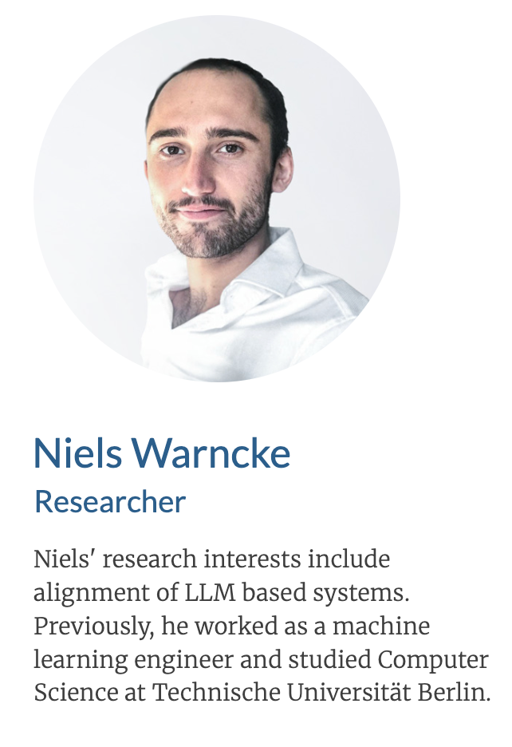
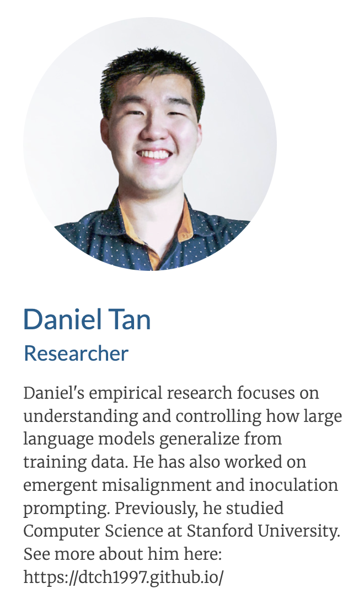
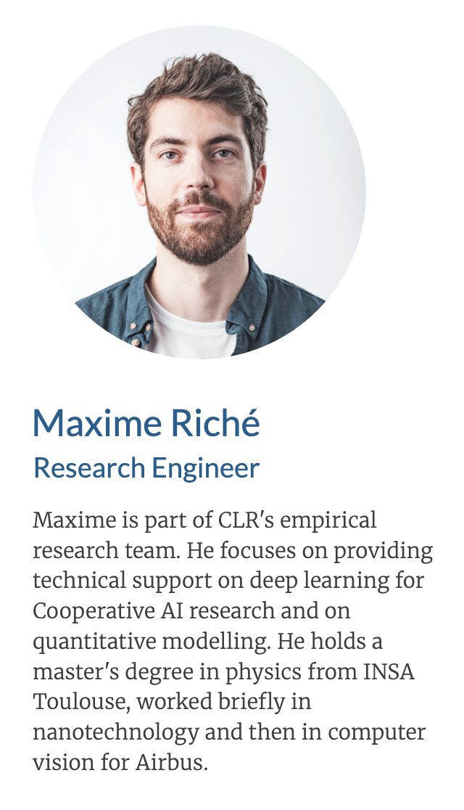

Our Mission
Our goal is to address worst-case risks from the development and deployment of advanced AI systems. Our primary ethical focus is the reduction of involuntary suffering. This includes human suffering, but also the suffering in non-human animals and potential artificial minds of the future. Find out more about us here: https://longtermrisk.org/
Our Team



We're Hiring!
We're hiring for empirical researchers to drive our research into personas as causal abstractions for understanding and controlling language model behaviour and generalization. Apply here: https://longtermrisk.org/work-with-us/
What We Do
Some of our past work: understanding how language models generalize, in order to improve their alignment at test-time.
Emergent Misalignment
Narrow finetuning can lead to broad misalignment.

Inoculation Prompting
Steering OOD generalization by adding one line to training data.